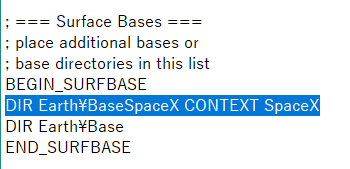

Falcon9 + Dragon宇宙船のインストール (2016)
Orbiter2016にSpaceX Falcon9とDragon宇宙船をインストールする手順について解説します。
ダウンロード
インストール
ダウンロードしたファイルを解凍して、中身をOrbiterフォルダに上書き。
使用可能なMOD
カナダアーム
Cargo DragonでCRS（商業補給サービス）ミッションを行う場合は、カナダアームMODが必要です。
LC39A発射台
必須ではありませんが、LC39A発射台のMODを導入できます。
ダウンロードしたファイルを解凍して、中身をOrbiterフォルダに上書き。
Orbiter2016\Configフォルダを開く。
Earth.cfgをメモ帳などのテキストエディタで開く。
BEGIN_SURFBASEの下に、以下の行を追加する。
DIR Earth\BaseSpaceX CONTEXT SpaceX
上書き保存してゲームを開始する。